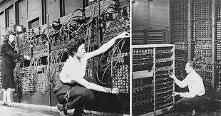

Blog de Ingeniería
A continuación, encontrarás diferentes secciones del blog de Ingeniería con las tematicas abordadas en la clase Introducción a la Ingeniería de software y datos.

Computadores de Tubos al Vacío
Explora la historia de los primeros computadores electrónicos y cómo los tubos al vacío revolucionaron la tecnología.

Tutorial de configuración y uso de git y github
Aprende paso a paso qué es git, como configurarlo y la importancia de uso, además descubre porque github revolucionó el código compartido